Owner review, 2026-10-19
Every in-engine shot below was re-taken after the lighting fix. Click an image for full size. Try the running build at http://127.0.0.1:8094/. Text version: 2026-10-19-owner-queue.md.
F1 Coast and river-mouth seams, rotated building walls (fixed)
Your report: hard lines at the hex edges in bay and headland water, and between river and river-mouth tiles. The bakery agent also found rotated cottages, the bakery and the barn with black sun-side walls.
One cause (c15edd8): since 2026-10-17 (ccfdafd) the shader that turns surface normals with a tile had one transpose too many, so every piece placed at 60, 120, 240 or 300 degrees was lit as if mirrored. Tiles at 0 and 180 degrees were right, which is why the lines sat exactly on the edge between differently rotated tiles. A second bug (79e44ab) made the bay and headland wet sand vanish on the instanced path, leaving a dark trench.
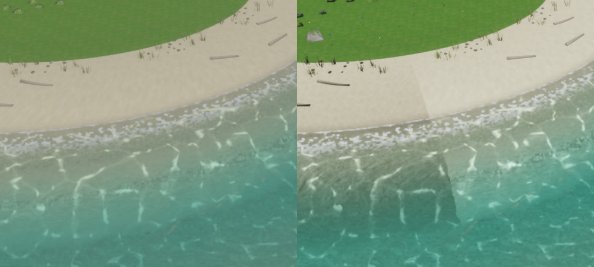
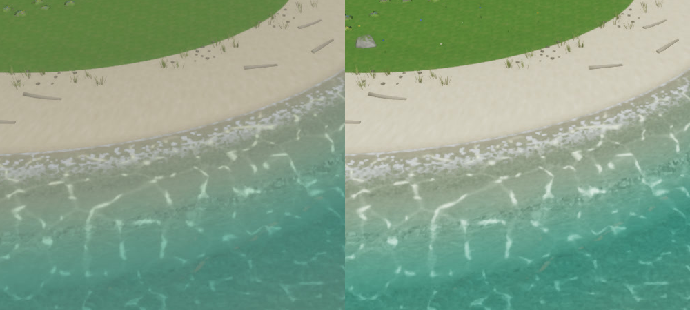
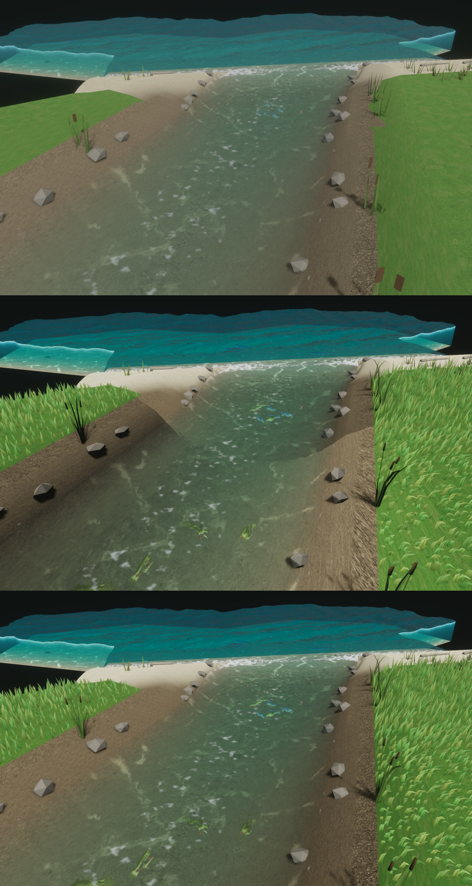
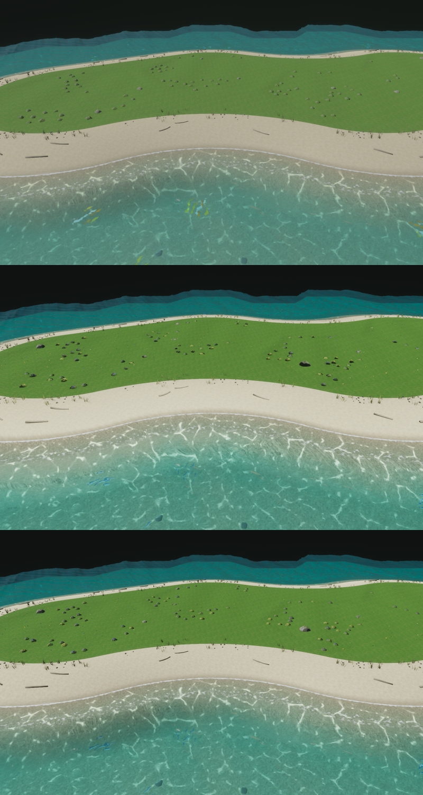
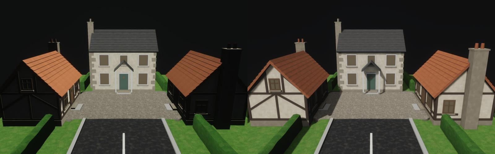
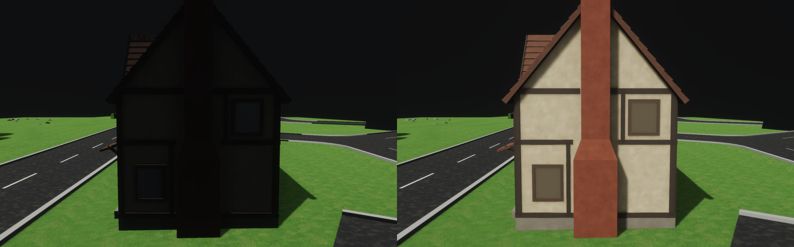
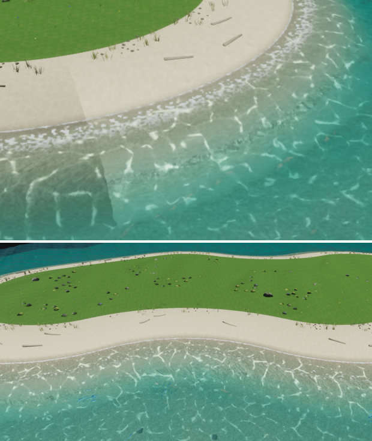
A1 Hay bales hay_bale_round, hay_bale_stack
Net-wrapped round bale (576 / 168 / 64 tris) and a five-bale twine stack (509 / 227 / 67). Shots re-taken on the fixed renderer.
- Q1. The square-bale straw is paler and cooler than ref-2's gold. Warm it?
- Q2. The round bale is net-wrapped as briefed; the references draw twine. Keep the net?
- Q3. Do the shade sides read right now?
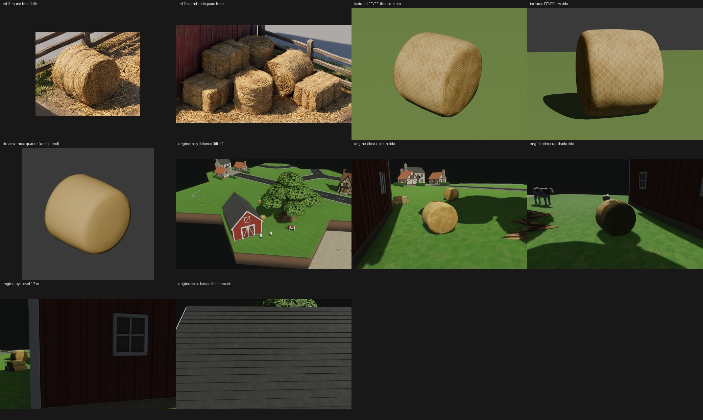
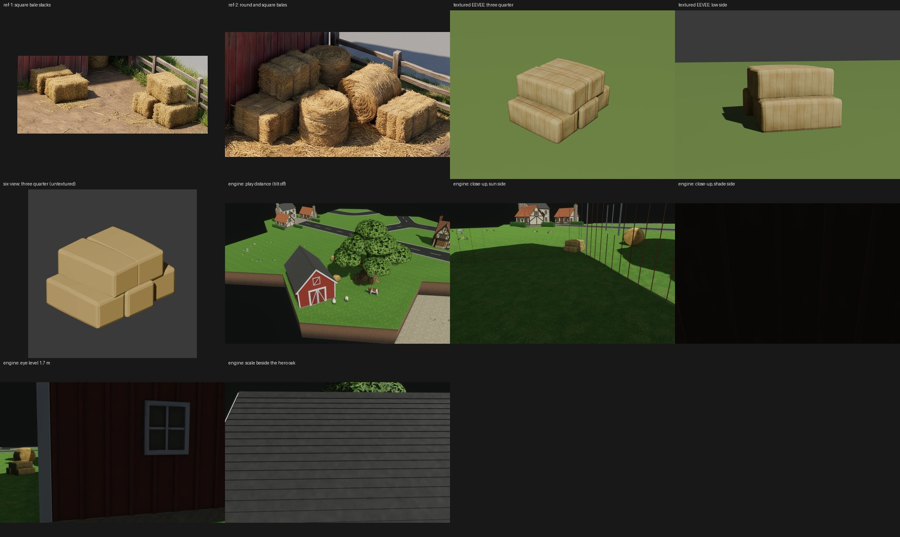
A2 Red barn barn_red
10 x 7 m, 45 degree slate roof, braced double doors, hayloft door (1054 / 280 / 58 tris). Shots re-taken on the fixed renderer: the sun side is now lit, and the back gable is a true shade side.
- Q4. Keep this red, or lift its value slightly?
- Q5. Size right beside the houses, or smaller (8 x 6 m)?
- Q6. Add the ref-1 lean-to shed or open doors?
- Q7. Accept faint batten aliasing at eye level, or widen battens to 4 cm?
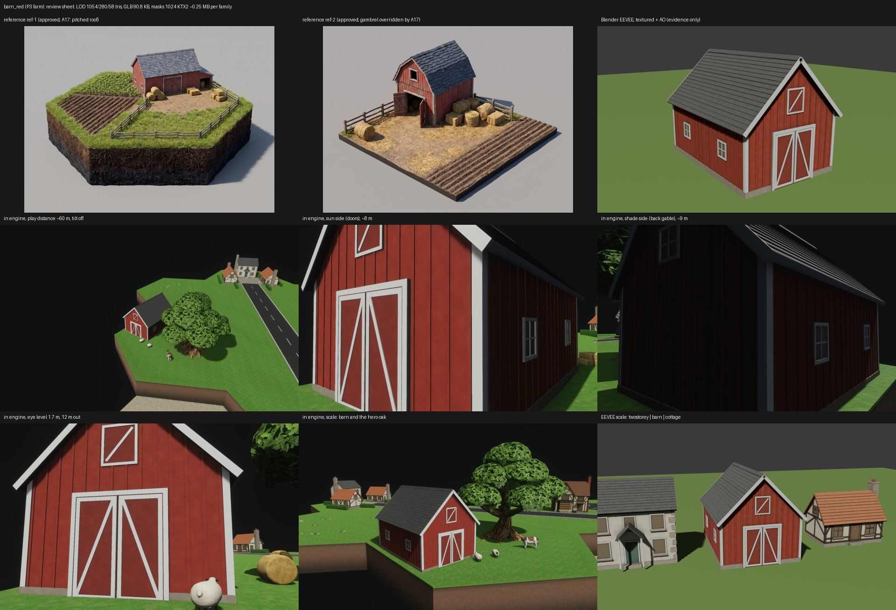
A3 Bakery bakery_shop
Timber-framed shop in the cottages' style, bread as colour bands and masks behind the bow window (1405 / 601 / 127 tris), on road tile (1, 0) facing the road. Shots re-taken on the fixed renderer, including the two shadows-off frames that first showed the bug.
- Q8. Roof: the references' darker brown, or the cottage's orange tile?
- Q9. Add flower boxes under the upper windows (about 95 tris)?
- Q10. Bread as colour bands and masks, or some loaves as geometry?

A4 Cow and sheep animal_cow, animal_sheep
Hornless brown-and-white cow (1.45 m withers, 1058 / 468 / 148 tris) and black-faced sheep (0.78 m, 736 / 306 / 110). Static for now, with leg and head weights built in for a later wander and graze.
- Q11. The sheep's wool neck reads as a flat collar where it leaves the fleece. Smooth it?
- Q12. Scale is shown beside the oak and hay; want one beside a house?
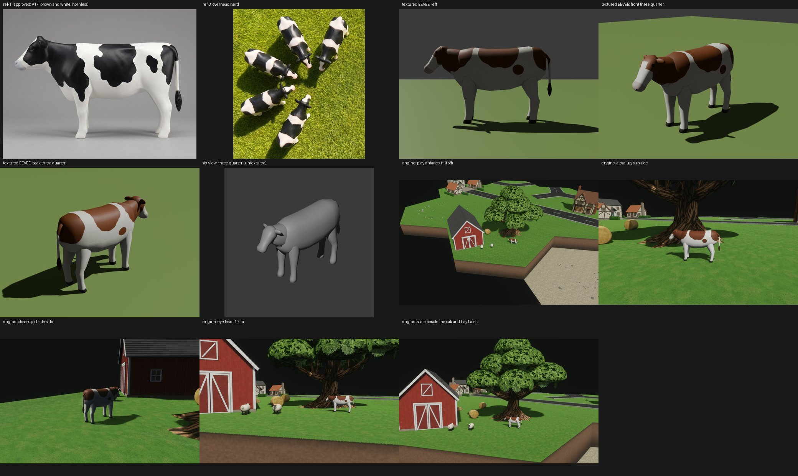
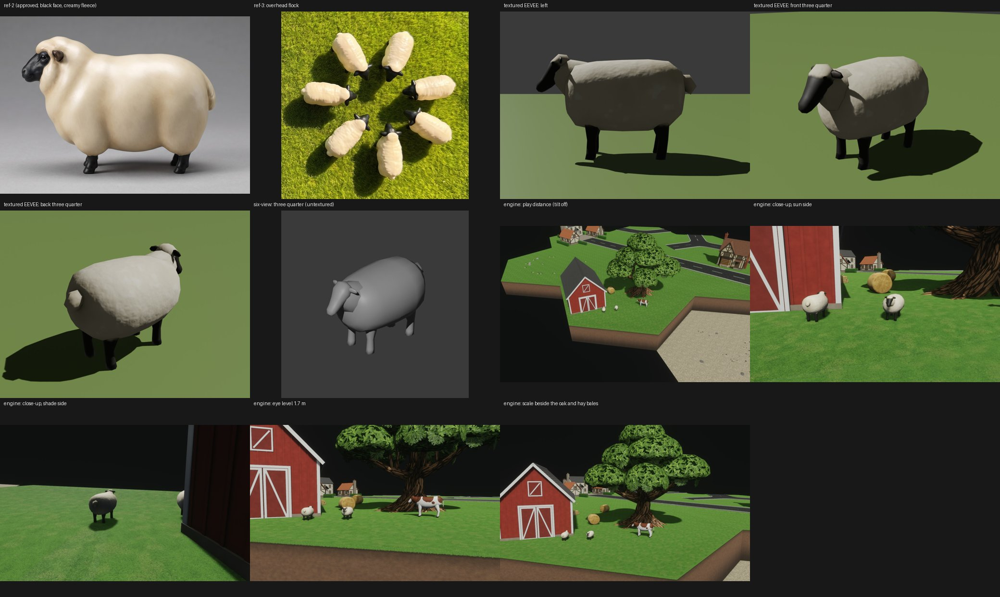
A5 Houses re-baked house_cottage, house_twostorey
Thin faces (glazing bars, frame returns) had no baked shading data and drew black. Now 0 such triangles on every LOD; geometry unchanged. Before/after Blender stills, 3x zooms.
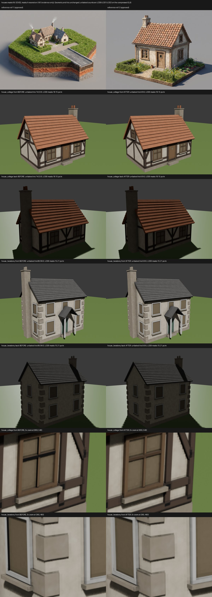
G1 Grass distance setting
Settings now has Grass distance: Near (today, default), Medium, Far, Very far. Far keeps full grass to about 80 m and some to 116 m. None of them show grass at the default ~158 m camera. Frame-time cost is not measured yet (host load was 106-215, MiniMac unreachable).
- Q13. Keep Very far before it is measured, or hide it until a perf run says it is affordable?
- Q14. Should the default stay Near, or move to Medium once measured?
P1 Push
Main holds the commits above plus the Dependabot fix (sharp 0.35.5, unused gltf-transform CLI removed; npm audit clean). make checkall-ci is green. The four Dependabot alerts close only after a push.
- Q15. Push now?